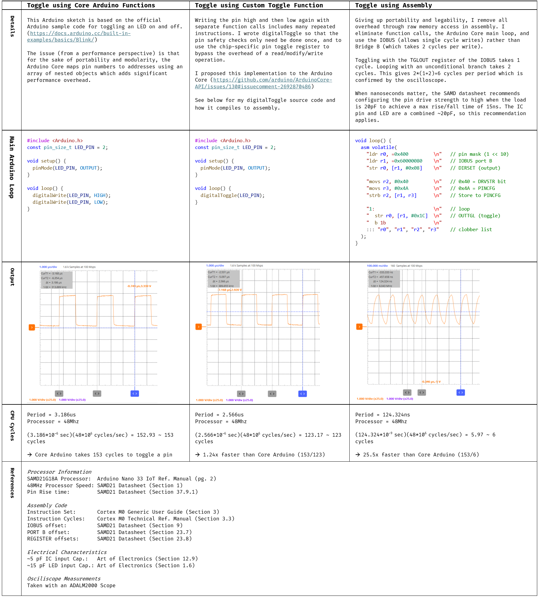
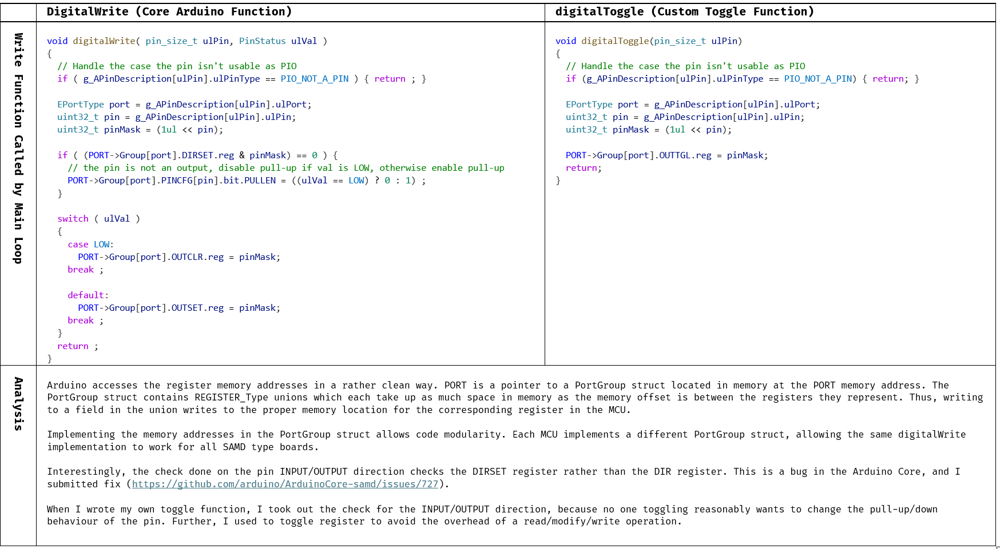
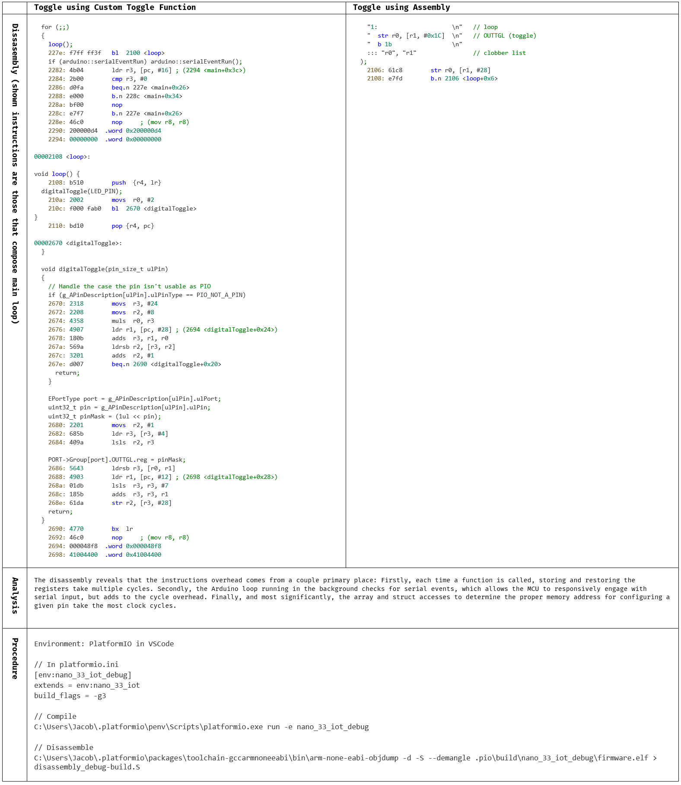

Fixing Bug in Arduino Core and Making it 25x Faster
Challenge
While working on my ball-beam bot, I needed to implement a pin-toggler. To test it out, I thought I'd try to get an LED to blink as fast as possible with an Arduino.
Solution Summary
Using assembly, I ultimately achieved performance 25x that over the official Arduino example Blink sketch code. In the process, I made two contributions to the Arduino Core: A digitalToggle function, which improves pin toggle performance by 1.24x and a bug fix to the digitalWrite function.
Fixing a bug in the Arduino Core digitalWrite Function
While looking for inefficiencies in the Arduino Core, I found a bug in the digitalWrite function. The digitalWrite function is what’s used to turn a pin output ON or OFF. It only makes sense to turn a pin ON or OFF if the pin is configured as an OUTPUT, so digitalWrite, confirms first that it is. If its not, digitalWrite instead adjusts the pullup configuration of the pin. At the memory level, there’s two relevant registers related to configuring the INPUT/OUTPUT direction of the pin. Writing to the DIRSET register configures the pin to be an OUTPUT and reading from the DIR register retrieves the pin’s current direction state.
The digitalWrite function incorrectly reads from the DIRSET register, rather than the DIR register when determining the pin’s current direction. This will cause the function to sometimes incorrectly attempt configuring pull-up resistors even on pins configured as outputs. This bug has likely been present for some time without causing major functional issues, because (my testing showed) DIRSET usually tracks DIR (but this is not guaranteed!), and setting pull-up configuration on output pins has minimal effect (output drivers override pull-ups).
Making an LED Blink Very Fast
Attempts and Results
Source Code and Analysis
Dissassembly and Analysis
